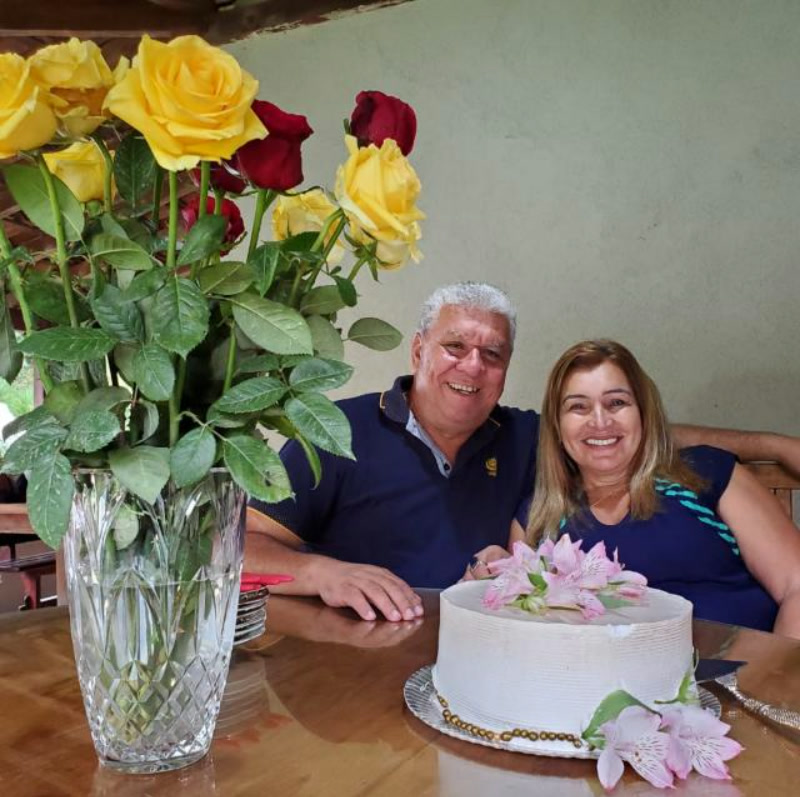
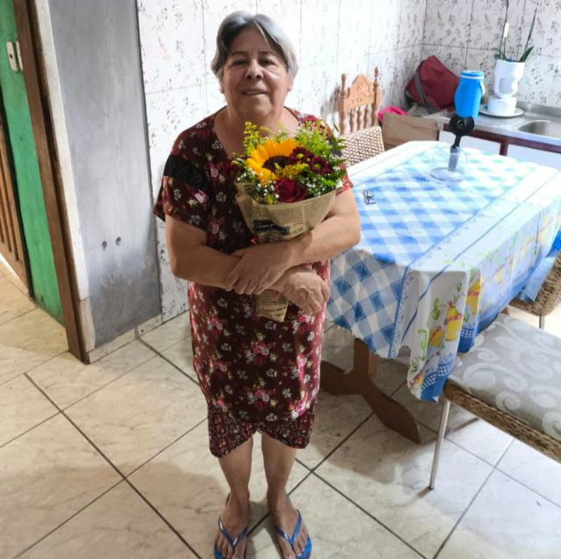

Consultoria estratégica, contratos e soluções extrajudiciais conduzidas com técnica, discrição e atenção a cada detalhe. Você entende o seu caso, conhece as opções possíveis e decide com segurança — presencialmente em Curitiba ou online, de onde estiver.

Áreas de atuação
Atuação consultiva e extrajudicial, do primeiro atendimento à conclusão do caso, com orientação clara e estratégia definida em conjunto com você.
Orientação direta e objetiva para você saber onde está e quais caminhos existem, antes de decidir o próximo passo.
Elaboração e revisão de contratos sob medida, com cláusulas que protegem o seu patrimônio nas relações comerciais e pessoais.
Divórcio consensual em cartório, de forma célere e sigilosa, sempre que a lei permitir — com partilha definida em comum acordo.
Inventário resolvido em cartório com partilha planejada, reduzindo o desgaste entre herdeiros e dando previsibilidade à família.
Regularização do seu imóvel diretamente no Registro de Imóveis, conferindo segurança jurídica à posse da sua família.
Análise do seu histórico contributivo, requerimento de benefícios e acompanhamento das etapas junto ao INSS.
Estratégia de contribuições e regras de transição para você se aposentar da forma mais favorável permitida por lei.
Organização de bens e sucessão planejada para proteger o que você construiu e evitar conflitos futuros na família.
Como funciona
Sem juridiquês e sem surpresas: você sabe o que será feito, em quanto tempo e quais documentos reunir em cada etapa.
Conte brevemente a sua situação. Sem compromisso: o primeiro contato serve para entender o seu caso e agendar o atendimento.
Na consulta, avaliamos documentos, prazos e alternativas. Você recebe orientação clara sobre direitos, riscos e possibilidades.
Apresento o caminho recomendado, o que é necessário para segui-lo e os honorários envolvidos — com transparência, antes de qualquer providência.
Conduzo o caso até a conclusão — em cartório, no INSS ou no Registro de Imóveis — mantendo você informada em cada avanço.

Sobre a advogada
O Ambiente Jurídico Digital nasceu para tornar o Direito acessível e compreensível, sem abrir mão do rigor técnico. Cada atendimento começa pela escuta: entender a sua história, os seus objetivos e as suas preocupações é o que permite desenhar a estratégia mais adequada ao seu caso.
A atuação é consultiva e extrajudicial sempre que a lei permitir — o que significa mais agilidade, economia e privacidade para você. Quando a via judicial é necessária, você segue com informação clara e preparo em cada etapa.
Dúvidas frequentes
Reuni as perguntas mais comuns para que você chegue ao atendimento com clareza.
Prova social
Depoimentos espontâneos de clientes reais, concedidos de própria vontade após a conclusão dos seus casos. Veja o que dizem — e sinta a tranquilidade de quem foi bem atendido.






Depoimentos cedidos gratuitamente pelos clientes. Os nomes foram abreviados por segurança e resultados variam conforme cada caso.
Vamos conversar
Envie uma mensagem contando brevemente a sua situação. Retorno o mais breve possível com a orientação inicial e o agendamento do atendimento.
Rua Cândido Lopes, 146 — Centro, Curitiba/PR · CEP 80020-060